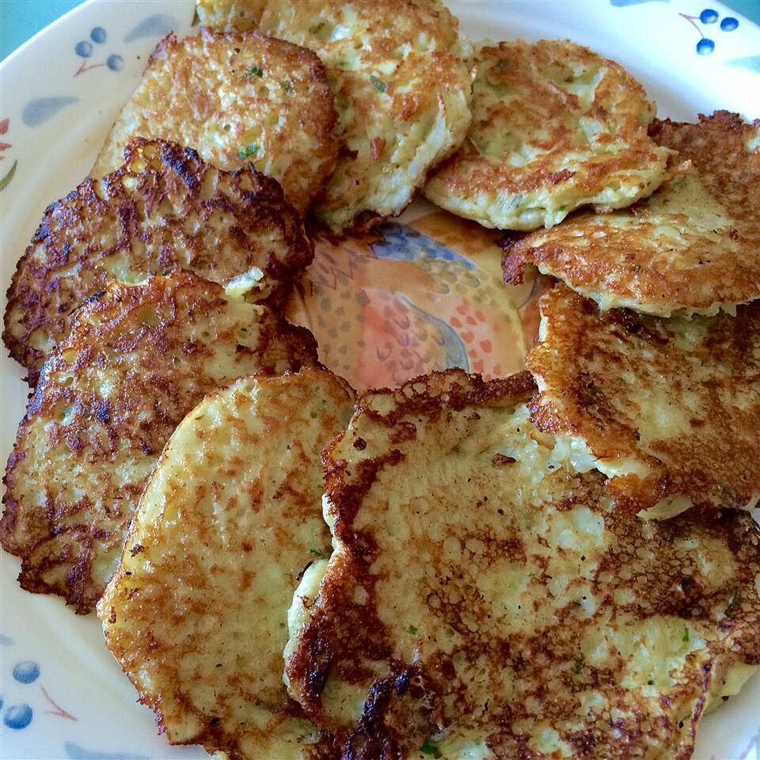

Potato

Potato latkes I recipe
Description
A classic potato latke, you can't go wrong with these crispy hot cakes. Serve with applesauce, sour cream and chopped green onions! Happy Hanukkah!
30 mins preparation time
Ingredients
- 2 cups peeled and shredded potatoes
- 1 tablespoon grated onion
- 3 eggs, beaten
- 2 tablespoons all-purpose flour
- 1 ½ teaspoons salt
- ½ cup peanut oil for frying
Steps
-
Place the potatoes in a cheesecloth and wring, extracting as much moisture as possible.
-
In a medium bowl stir the potatoes, onion, eggs, flour and salt together.
-
In a large heavy-bottomed skillet over medium-high heat, heat the oil until hot. Place large spoonfuls of the potato mixture into the hot oil, pressing down on them to form 1/4 to 1/2 inch thick patties. Brown on one side, turn and brown on the other. Let drain on paper towels. Serve hot!